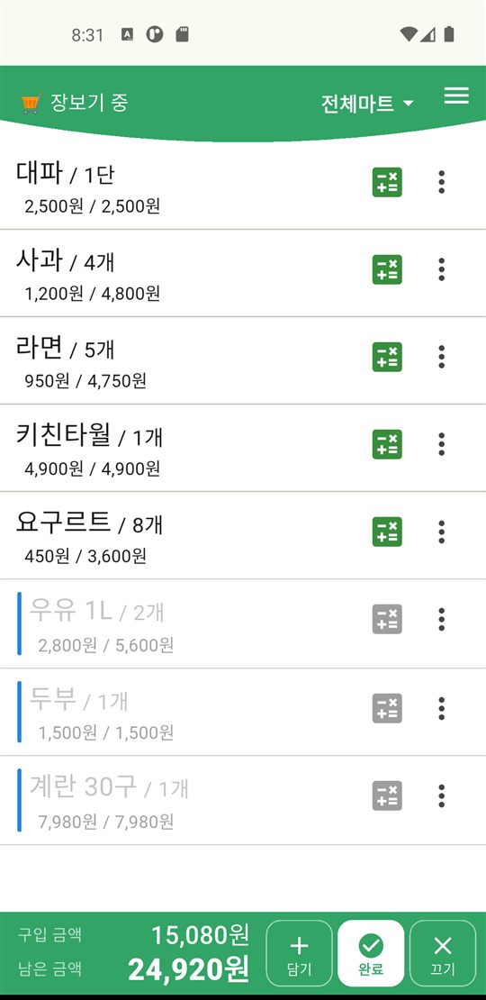

미리 담아 두거나
장 보면서 담은 목록을 보며,
하나씩 눌러서 지우고,
오늘 남은 예산이 얼마인지
바로 보고 싶었어요.
회원가입 없고,
기록은 내 폰에만 남아요.


여러 개 한 번에, 사진 글자 · 바코드도.
한 번 산 상품은 이름과 가격이 자동으로.

화면 안 꺼지고 글씨는 크게,
안 산 것이 위로.

바구니마다 예산, 한 달 예산까지 정해 두면
장 보는 동안 남은 금액이 바로 보여요.
넘으면 빨갛게 알려 줘요.
도와주신 분께는 나중에 나올 광고 제거를 평생 무료로 드릴게요.
신청할 필요 없어요. 지금 설치한 앱은 나중에 광고가 들어가도 자동으로 광고 없이 써요. 폰을 바꿔서 광고가 보이면 알려 주세요. 단, 나중에 나올 AI처럼 쓸 때마다 서버 비용이 드는 기능은 따로예요.
불편한 점은 한 줄이라도 보내 주시면 최대한 많이 반영할게요.
— 만든 사람 드림
잘 안 되면 support@amugonasoft.com 으로 편하게 물어봐 주세요.
① 담고, 체크하기 — 오늘 살 상품을 오늘 바구니에 담아 두고, 장 보면서 산 것을 바로 체크해요.
② 예산 보면서 장보기 — 바구니별 예산과 월 예산을 정해 두면, 장 보는 동안 구입한 금액과 남은 금액이 바로 보여요.
③ 미리 담아 두고 옮기기 — 나중에 살 것은 임시 바구니나 용도별 바구니에 담아 두었다가, 장 보는 날 오늘 바구니로 옮겨요. 오늘 못 산 상품도 다른 바구니로 옮겨 둘 수 있어요.
④ 쓸수록 편해지기 — 기록이 쌓일수록 상품 이름과 가격이 자동으로 채워져서, 담는 일이 점점 빨라져요.
메모는 적기만 하지만, 오늘 장보기는 마트에서 누르면 체크되고 가격을 넣으면 남은 예산이 바로 계산돼요. 다 사면 기록으로 남아서 다음에 같은 상품을 담을 때 이름과 지난 가격이 자동으로 나와요.
가계부는 쓰고 난 뒤에 적지만, 오늘 장보기는 사기 전에 담고 사는 동안 예산을 보면서 장을 봐요. 장보기 완료를 누르면 그대로 구입 기록이 되니, 따로 가계부를 적지 않아도 월별 장보기 금액이 쌓여요.
네. 지금 버전은 광고 없이 모든 기능을 무료로 쓸 수 있어요.
＋ 버튼에서 고르면 돼요. 한 건씩, 여러 줄을 한 번에, 전단지나 메모를 사진으로 찍어 글자로, 바코드로 담을 수 있어요. 자주 쓰는 방법은 설정 › 담기 메뉴 순서에서 위로 올릴 수 있어요.
네. 나중에 살 것은 임시 바구니에 담거나, 「코스트코」 「아이 준비물」처럼 용도에 맞는 바구니를 만들어 담아 두세요. 장 보는 날 필요한 상품만 골라 오늘 바구니로 옮기면 바로 장보기를 시작할 수 있어요. 마트에서 장 보다가 「아, 이것도 사야지」 싶은 건 그 자리에서 다른 바구니에 미리 담아 두세요. 다음 장보기 때 잊지 않아요.
찍은 사진에서 글자를 읽어 줄별로 보여 줘요. 원하는 줄을 고르면 「할리스 라떼 500ml」처럼 하나로 합쳐 담거나, 줄마다 따로 담을 수 있어요. 글자 읽기는 폰 안에서 해서 사진이 밖으로 나가지 않아요.
네, 식품은 대부분 나와요. 식품안전나라의 바코드 제품 정보(약 26만 건)를 오늘 장보기 홈페이지에 매주 정리해 두고, 처음 보는 바코드를 찍으면 그 바코드의 끝 3자리에 해당하는 작은 파일(약 4KB)만 받아서 찾아요. 바코드 전체 번호는 보내지 않아서 무슨 상품을 찍었는지 알 수 없고, 한 번 찾은 상품은 폰에 기억돼 다음부터는 인터넷 없이 바로 나와요. 설정 › 바코드로 상품 이름 찾기에서 끌 수 있어요.
세제 · 휴지 같은 생활용품이나 새로 나온 상품은 자료에 없을 수 있어요. 이름을 한 번만 붙여 주세요. 그다음부터는 같은 바코드를 찍으면 바로 그 상품으로 담겨요. 바코드 숫자를 직접 입력할 수도 있어요.
예산은 바구니마다 따로 정하고, 월 예산은 설정 › 월 예산 설정에서 정해요. 남은 예산은 바구니 예산에서 체크한 상품의 금액을 뺀 값이에요. 위 녹색 금액을 누르면 예산을 정하고, 길게 누르면 구입 · 남은 · 예산과 이번 달 월 예산까지 한 번에 보여요. 예산을 넘으면 빨간색으로 알려 줘요.
마트에서 한 손으로 쓰기 좋게 바꾼 화면이에요. 화면이 꺼지지 않고, 글씨가 커지고, 안 산 것이 위로 올라와요. 오늘 바구니 화면에서 아래 「장보기 모드」 버튼을 누르면 켜지고, 다른 화면에서는 「오늘 바구니」를 길게 누르면 돼요.
네. 마트 선반에 붙은 작은 전자 가격표(상품명 · 가격이 나오는 디스플레이)를 찍으면 상품명과 가격이 함께 읽혀요. ＋ › 「사진으로 입력」에서 가격표를 화면에 크게, 반듯하게 찍고 상품명 · 가격 부분만 남기면 더 정확해요. 반사가 생기면 살짝 비스듬히 찍어 보세요.
수량에 묶음 안 개수를, 합계금액에 계산대 가격을 넣으세요. 예를 들어 라면 5개 묶음이 8,000원이면 수량 5, 합계 8,000원만 넣으면 1개 1,600원으로 알아서 나눠 계산해요. 한 개 값으로 기록되니, 다음에 낱개로 살 때와 비교하기도 쉬워요.
네. 가격을 넣을 때 그 마트의 지난번 가격이 함께 보이고, 기록에서 상품별 가격 변화를 볼 수 있어요. 영수증을 찍어 여러 상품 가격을 한 번에 채울 수도 있어요.
네. 기록 화면 아래 「영수증으로 추가」를 누르고 영수증을 찍으면, 맨 위 마트 이름과 날짜, 상품 목록을 읽어 와요. 할인은 그 상품 금액에서 빼 주고, 봉투 · 보증금은 기본으로 빼 둬요. 저장 전에 이름 · 금액 · 마트를 고칠 수 있어요. 이미 있는 기록에 금액을 못 넣었다면, 그 기록의 「금액 없는 상품 · 영수증으로 채우기」(또는 ⋮ 메뉴)로 영수증을 찍으면 상품마다 맞는 줄을 찾아 빈 금액을 채워 줘요. 사진은 폰 안에서만 읽고 어디에도 보내지 않아요.
설정 › 참고 가격 받기를 켜면, 한국소비자원 「참가격」이 조사한 생필품 가격을 단가 칸 아래에 보여 줘요. 이마트 · 롯데슈퍼 · GS더프레시 · 하나로마트 · 백화점 · 편의점의 평균 가격이에요. 처음 한 번 「참고 가격 찾기」에서 맞는 상품을 고르면 다음부터 바로 보여요. 2주마다 조사한 값이라 실시간 가격이 아니고, 실제 마트 가격과 다를 수 있어요. 정해진 생필품 약 600개만 조사해서 없는 상품도 있어요.
아니요. 새 조사가 나왔을 때만 약 30KB짜리 파일 하나를 받아요. 사진 한 장의 100분의 1 정도이고, 1년 동안 받아도 1MB가 안 돼요. 받은 뒤에는 인터넷 없이도 마트에서 볼 수 있어요. 「와이파이에서만 받기」나 기능 끄기도 할 수 있고, 내 목록이나 개인정보는 보내지 않아요.
장보기 완료를 누를 때 고를 수 있어요. 오늘 바구니에 남겨두기, 다음에 살 것을 모아 두는 임시 바구니로 옮기기, 또는 지우기 중에서요. 장보기 중에도 상품을 골라 다른 바구니로 이동할 수 있어요.
한 번 산 상품은 이름과 가격이 기록에 남아요. 다음에 몇 글자만 입력해도 상품 이름이 자동으로 나오고, 그 마트의 지난번 가격을 그대로 넣을 수 있어요. 바코드도 한 번 이름을 붙이면 다음부터는 찍기만 하면 돼요.
장보기 완료한 바구니는 구입 기록에 쌓이고, 월별 구입 금액을 그래프로 볼 수 있어요. 설정 › 월 예산 설정에서 한 달 예산을 정하면 남은 월 예산도 보여요.
바구니를 카톡이나 문자로 보내면, 받은 사람이 링크를 한 번 누르면 오늘 장보기 앱의 받은 바구니로 바로 담겨요. 앱이 없는 사람도 링크를 열면 목록을 볼 수 있어요.
받은 글을 복사해서 ＋ 버튼 › 복사한 목록 붙여넣기를 누르면 상품마다 나눠서 한 번에 담겨요. 쉼표나 줄을 바꿔 쓰면 되고, 「두부 한 모」처럼 써도 수량을 알아서 읽어요. 보내는 사람은 앱이 없어도 돼요. 붙여넣기 창의 「가족에게 보내는 법 알려 주기」를 누르면 이렇게 보내 달라는 안내를 바로 보낼 수 있어요.
카톡 안에서 열린 화면이면 오른쪽 위 메뉴에서 다른 브라우저로 열기를 눌러 보세요. 그래도 안 되면 받은 메시지 전체를 복사해서 앱의 「받은 메시지 붙여넣기」로 넣으면 돼요.
실시간 가족 공유는 준비 중이에요. 지금은 바구니 보내기 · 받기로 나눠 쓸 수 있어요.
회원가입도, 로그인도 없어요. 목록과 기록은 내 폰에만 저장되고 서버로 보내지 않아요.
설정 › 데이터 백업으로 파일을 만들어 새 폰에서 데이터 복원을 하면 그대로 옮겨져요. 앱을 지우면 폰 안의 기록도 함께 지워지니, 가끔 백업해 두세요.
비밀번호를 건 백업 파일은 비밀번호 없이는 아무도 열 수 없어요. 저희도 찾아 드릴 수 없으니 꼭 기억해 두세요. 비밀번호 없이 백업할 수도 있어요.
설정 › 구입 기록 엑셀로 받기에서 엑셀에서 바로 열리는 파일로 받을 수 있어요.
따로 신청할 필요 없어요. 지금 버전(1.0)에는 광고가 없고, 나중에 광고가 들어가는 버전으로 업데이트되어도 1.0을 설치해 둔 폰은 자동으로 광고 없이 계속 쓸 수 있어요. 앱이 처음 설치한 버전을 폰에 기억해 두기 때문이에요(서버로 보내지 않아요). 안드로이드의 구글 백업이 켜져 있으면 앱을 지웠다 다시 깔거나 새 폰으로 옮겨도 대부분 그대로 이어져요. 혹시 광고가 보이면 support@amugonasoft.com 으로 알려 주세요. 구글 계정에 영구로 묶이는 방법으로 해결해 드릴게요.
무엇이 들어 있나요? 「광고 제거」는 광고 없음 + 광고 제거 버전에서 열리는 기능을 모두 말해요. 다만 나중에 나올 AI처럼 쓸 때마다 서버 비용이 드는 기능은 따로예요.
설정 › 글자 크기에서 키울 수 있고, 장보기 모드에서는 더 크게 보여요. 다크 모드도 있어요.
오류가 나도 앱은 꺼지지 않고 계속 쓸 수 있게 만들었어요. 오류가 나면 아래에 「앗, 문제가 생겼어요 [알려 주기]」가 잠깐 떠요. 알려 주기를 누르거나 설정 › 오류 기록 보내기를 누르면 오류 내용이 채워진 메일이 열려요. 보내기 전에 내용을 볼 수 있고, 이름 · 전화번호 · 위치 · 장보기 목록 같은 개인정보나 기기 고유번호는 들어 있지 않아요(기기 정보는 「Android 11」 같은 버전만). 영어 · 숫자로 된 부분은 앱 안에서 오류가 난 위치를 가리키는 개발자용 정보예요. 어떤 화면에서 무엇을 하다가 생겼는지 한 줄만 적어 주시면 빨리 고칠게요.
네. 담기, 체크, 사진 글자 읽기, 기록 모두 인터넷 없이 돼요. 참고 가격도 한 번 받아 두면 인터넷 없이 볼 수 있어요.
지금은 안드로이드(구글 플레이)만 지원해요.
support@amugonasoft.com 으로 보내 주세요. 하나하나 읽고 다음 버전에 반영할게요.